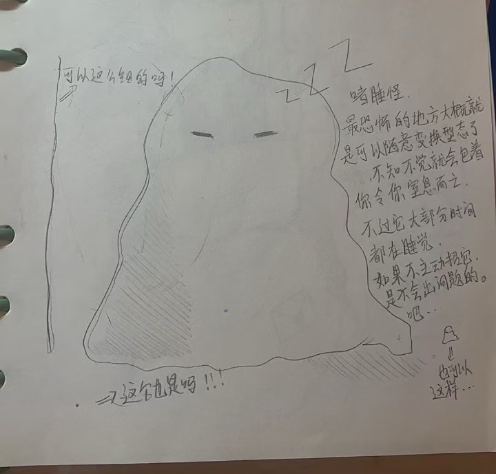
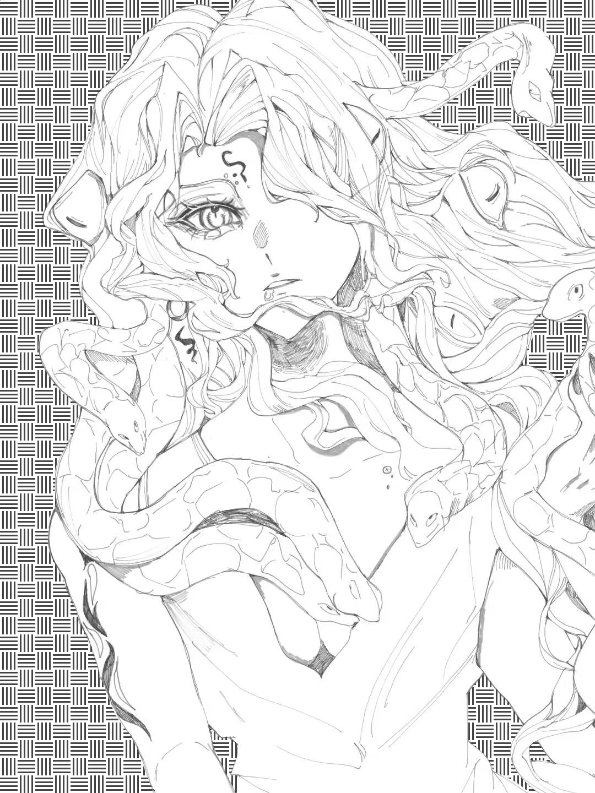
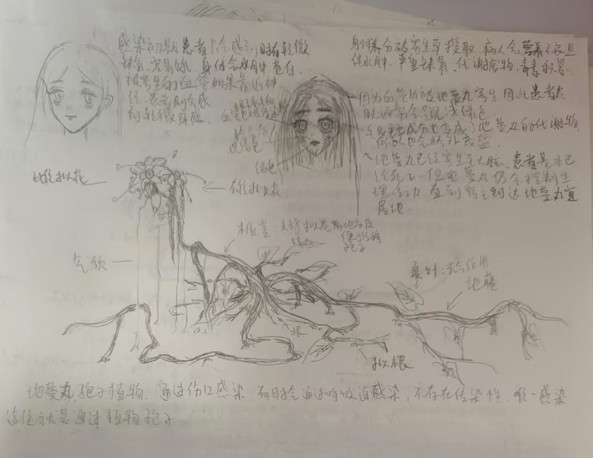
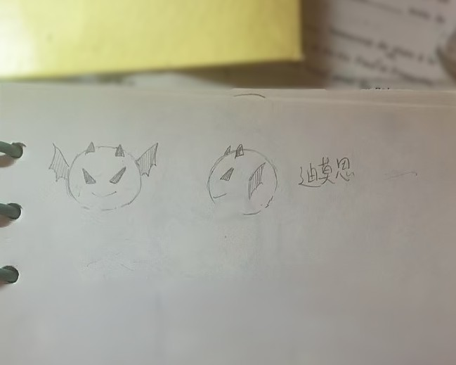
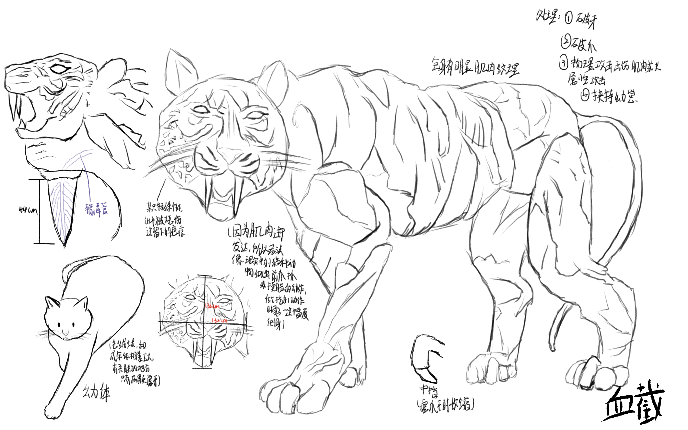
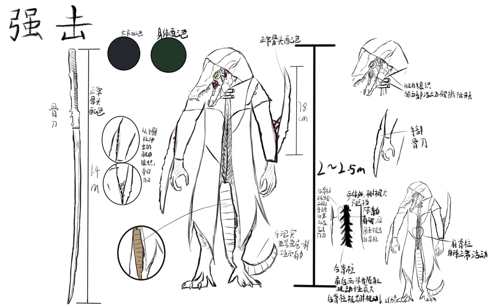
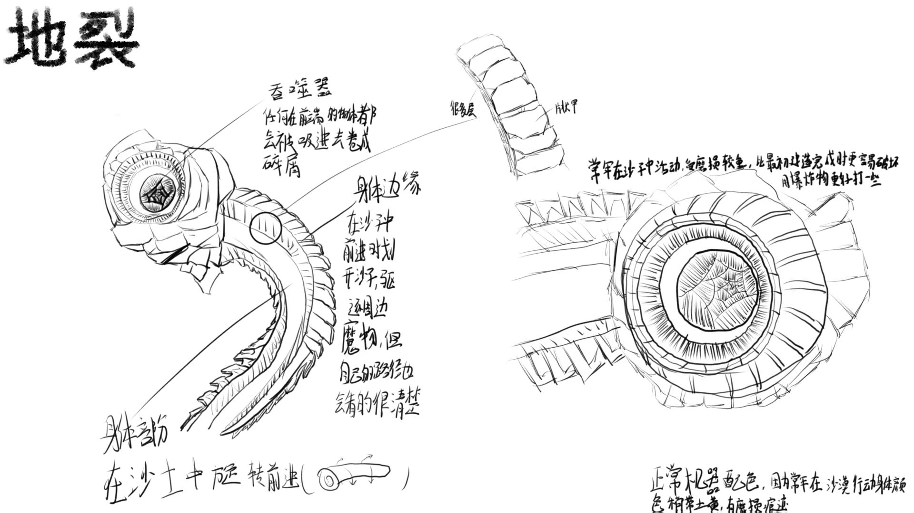

“Bringing fire from the dawn, vanishing in the storm of fear
Awakening in the star river of Eden, we will always be fleeting travelers”
▼Scroll down
What is the "Imaginist Parade"
In the inner world called Pavers bay, a lone traveler burdened with life's responsibilities and seeking the important medium in their heart can step into this haven built on dreams,
become an idealist, and under the power of the Core Tower, carve out their own ideal nation to be protected by the dream makers.
Boundless seas of endless fog hide monsters that try to devour everything, so all nations set aside their differences and unite against the enemy. In a dream world where time flows differently, ideals and memories become the lights that fend off hardships.
This journey, shuttling between reality and dreams to protect a place for the heart to dwell, is the ideal parade.
[Pavers Bay]
In this world, some people who meet certain conditions and walk alone under the weight of life can use objects that are significant to them as a medium to enter an inner world beyond this reality, and have a promised land of their own. Such people are called 'Idealists' by others like them, and their land is called the 'Ideal Nation.' Idealists refer to this inner world as 'Pavers bay,' meaning a safe haven built on the foundation of dreams.
[Core]
The entire Inner World operates around a tall tower called the 'Core.'
When an Idealist's medium in the three-dimensional world resonates with the Pivot Tower, they carve out a new ideal nation in the endless misty sea surrounding the tower. The core of the nation, called the Medium Nucleus, is a creation formed by part of the tower's power guided and reinforced by the medium. It's usually a building where the Idealist lives, or it could be a distinctive plant or a small body of water. The area of the nation is generally similar to the new land created around the Medium Nucleus, which serves as the center, so there are no territorial disputes in this world. The Medium Nucleus has a strong connection to the Pivot Tower, allowing Idealists to directly teleport from the nucleus to the tower’s public platform, and from there to anywhere within the base port range.
The essence of the Pivot Tower comes from the will that shatters dimensional walls: either from people who couldn’t endure the hardships of real life and collapsed, or from those who spent their lives lonely, longing for warmth, and wished after their death that others facing similar fates could find redemption. This will condenses into lighthouses that open harbors in the misty sea.
[Dreambuilders]
They are the ideal creations that manage the nation on behalf of idealists when the idealists can't step away from real life. They are characters projected into the base port from roles imagined by the idealists. A single idealist's nation usually has between three to seven dreamers. Dreamers have some combat ability against monsters, so they also take on part of the nation’s defense duties. When the idealist isn’t at the base port, they’re the ones sending out calls for help to other nations.
[Everfog]
Both Ji Port and the Bang Nation are lands surrounded by dense seas of fog. The endless fog sea is an enemy of Pavers bay, but its power is restrained by the Core, so it can't invade the gradually thriving idealistic Ji Port. At the same time, the fog sea is a breeding ground for monsters. These monsters come in different types depending on what the fog sea targets, but their main goal is always to attack the Bang Nation, destroy the Pivot Tower, and let the fog sea sweep across the world.
[The Four Forces]
It's more like a gathering than a power. Based on the orientation of the Core, the tower sorts different idealistic nations into the right groups. Fantasy and cultivation worlds are in the East, Western fantasy and Cthulhu-like worlds are in the West, the North is for cyberpunk and wasteland worlds, and the South is for slice-of-life and purely physical worlds without magic or superpowers.
[Nucleual Laws]
Dreambuilders set up special laws within their own countries through a kind of core medium. Due to the way countries are set up, in order to make it easier for ordinary citizens to get along with different species from other countries, the moment someone from one country steps onto another country's territory, they are immediately subject to that country's core laws. These core laws can do things like change the outsider's appearance (like shrinking their body, changing their clothes, or even altering their species), or restrict special abilities like flying or breathing underwater (though these restrictions for other countries' Utopians can be lifted if monsters attack). However, these laws don't change the outsider's combat points or how their combat points are originally distributed.
[Weapons]
The Dreamer's weapons are different from the regular people of Jigen. They use special weapons transformed from mediums, featuring characteristics of the Three Worlds' mediums. (It's similar to how when a person crosses into another world, they might transform into a self-created version or AC, and your important items would also transform).
[Imagist Album]
Dong An
Looks fairly ordinary, with black hair and golden eyes, usually wears her hair in double braids or a single ponytail. Not very sensitive to temperature, always carries a sketchbook and an old pen tied with two cockatiel feathers. Doesn't talk much usually, but when talking about fantasies and games, she can go on and on. Feels lonely when there's no one to chat with.
In the snowy wastelands of December, snow fell once again, which was quite ordinary, as it was like this almost all year round. Amid the snow-covered desert, there was a strange set of footprints—on one side were shoes, on the other, bird claws. Following the footprints, blood appeared on both sides, soon followed by the severed limbs of monsters. At the end of the footprints stood a monster being pinned to the ground by a large bird, pierced through with a staff. When the monster stopped breathing completely, the bird rose, spreading its wings, sending droplets of blood flying everywhere, revealing its true form.
No... it wasn’t a bird, but the Winter Lord of the Everfrost Tundra:
Sky Alioth of Moon Shadow———Star Return of forests
Zhou YiNuo
A dark historical female OC, probably because she has a gloomy side, looks like she isn't interested in anything. She rarely exercises, so she has muscle weakness, and her eyesight isn't good either. But when she hears topics she knows about and cares for, she internally gets really excited.
Actually, she really enjoys meticulously detailed isekai works, and she’s always carrying around a world-building notebook she made herself. The writing is tiny and dense, really hard to read, but she’s still obsessed with it—maybe there’s actually some kind of magic in that book....
In a faraway western kindom, a brave crown prince vowed to bring peace to her people.By doing the unthinkable she ventured out where no one had ever dared.In the everfog the monster no one could tame, but the crown prince's will did not waver. She sealing a blood pact to end all wars and monsters. And then, the hero brought forth the golden age of reveration.
Now everone，Please congratulate this crown prince on being crowned king. Let's welcome:
Scorching Sunstorm———Parmi III
MU
The young boy, dressed in a light blue short-sleeved shirt and black shorts, sat quietly at his desk, his fingertips gently resting on the open textbook. Sunlight from outside the window fell on the tips of his hair. He looked like an ordinary high school student, calmly remaining in this simple everyday life.
In front of a puppet house in the homeland of puppets, a mailman was slowly opening the shop door. “Hello, is anyone here? There’s a letter for you.” The only response he received was silence, the dim yellow light illuminating the faces of the puppets one by one—some joyful, some sorrowful. At this moment, it seemed as if all their gazes were fixed on the mailman in the green uniform. Yet he appeared completely unaware and carefully placed the letter on the ground. “Your letter has been placed here; please sign for it.” After bowing in the empty store, he turned to leave. Just as he was about to grasp the door handle, his wrist creaked like the joint of an old puppet that hadn’t been lubricated for decades. The air was filled with a deathly quiet. “I will sign for it,” a voice rang out, as if composed of hundreds of overlapping tones. From among the numerous puppets, one in a neatly tailored suit slowly stepped forward. Though its face should have seemed lifelike, only the carved wood grain was visible, as if unfinished or intentionally designed that way.
“Soulless and spiritless, with no flesh or bones, untouched by cause and effect, neither alive nor a spirit. Truly remarkable methods, sir. Just to deliver a letter, you’ve created such a thing.” It bent down, picked up the letter, and looked up. The shop entrance seemed as if no one had ever been there; sunlight shone brightly outside, yet not a trace penetrated the dim puppet house. Morelrn’s fingers wriggled and turned into sharp blades, slicing open the envelope.
“The same contents again. It seems you are very eager for me to attend.”
Silently calculating the passage of time, a flame erupted from the fingertips, consuming the letter. As the last ashes drifted away with a nonexistent breeze, the puppet seemed to lose its vitality, revealing delicate features on its face. The lights in the puppet house flickered twice before finally settling into silence.
Thousand People With One Face———Mo ErRen
Hosse
The bustling, crowded square was originally filled with passersby, but a sudden burst of fire tore through the momentary calm. Heat and smoke spread in all directions, and in the shadows of the flames, a man wearing a clown hat raised his arm and threw handfuls of playing cards into the air. One by one, the cards drifted down like falling feathers. Just as the cards slowly fell toward the crowd, the man's figure melted away, completely disappearing from the smoke-filled square.
Elsewhere, in a dim alley, the clown leaned silently against the wall, holding a brass scale in his left hand, while red liquid dripped slowly from the dagger in his right. On the floor beside him lay a corpse. Suddenly, as if sensing something, he shivered slightly and began to fade. When he completely vanished, only three coins fell to the ground, making a dull clinking noise.
Villain———Hosse
Xia Qing
A male high school student, outwardly cheerful, not into sports, often keeps his hair a bit long, of medium build and somewhat thin, average height, and looks unremarkable, just plain. He has a serious psychological condition but never shows it outwardly. He lives alone, and whether at home or outside, he's always the most inconspicuous person. Outside of studying, he spends his time researching medicine, biology, botany, and other subjects. On weekends, he goes to his parents' house for dinner one day, which is the hardest time in his life for him.
On the riverbank by the bridge, shadows sway
Children pass by on a punt, the bow pushing waves layer by layer
How much longing there is, for old friends underfoot, soaking clothes
Night rain drizzles on, life slips by
Shattered jade cups and bowls, gongs, fish lanterns casting shadows, regrets unfinished
Looking back, people are as quiet as mountain fires
The travelers wandering alone in the world, I pray for you, hoping I can heal you, guide you, and light up your path
The sky has cleared, let's head toward the future together.
Gentle Rain———Jian
Xi An
Single-parent family, mother died early, father was abusive, has a withdrawn personality, no friends, the only obsession is the pocket watch left by the mother they were closest to. Always has a low ponytail, dreams of traveling to another world where they can make their own magical potions, and spends every day holding some shabby book they got from who knows where.
She is a witch born among the shining stars, harmonizing all things in the world and glimpsing the fleeting wonders of the moment. Now, the Heartbeat River that seals energy has clogged into a silent glacier, urgently awaiting a passionate encounter to fix the countless stars in the sky as eternity, allowing the light and shadow of the sun and moon to play an everlasting symphony for dreams.
“Only the gods know whether it is possible, my friends. If I do not reach out to pluck the stars, how would I know how close I can draw?”
η UMa of Hreavenly Eye———Mu Hua
Shen Xue
Shen Xue has slender and graceful hands, with faint freckles scattered across her cheeks, and her long hair falls loosely. She always has a calm demeanor, rarely showing her emotions or smiling, as if the turmoil around her is hardly able to stir her feelings.
The vast sea of stars breaks through the clouds, the purple-gold rings of the valley come from the east
The divine star descends to open the sky, from now on what we see is no longer surprising
Breaking Through the Clouds————Ling Xiao
“Are you looking at my tattoos?”
She folded her hands gently over her abdomen, lowered her eyes, and spoke in a calm and gentle tone, without any aggressive sharpness. A faint smile played at the corners of her lips, understated and unobtrusive. Seeing you instinctively look away, she let out a soft laugh, her voice very light.
“It's okay. Many people notice them at first glance. They’re not fierce marks, just patterns I’ve gradually collected and liked.” She slightly turned her body, letting the cardigan slip off her shoulder a little, revealing a portion of the shoulder tattoo. Against her fair skin, the dark ink stood out clearly. Her tall figure exuded a composed sense of presence, yet there was no harshness at all. “Do you think that just by looking at my clothes and these tattoos, you’d assume I’m hard to get along with?” She raised her eyes to look at you, calmness resting in them.
“I just like to dress this way. If you have anything you want to ask, take your time—I’m listening.”
Moonlight over the Vast Cold————Chi Tin
Yv Shuo
A top-level socially anxious, unnoticed shut-in, who fantasizes about saving the world every day, spends every day alone, with a dark temperament, yet no one dares to approach her. According to those around her, when passing by, there is always a sense of ominous murderous intent...
"Is the identity of humanity really that important?"
Living beings need names, and so do the dead; living beings seek to bury themselves in fertile soil, yet retain vitality. The dead have no desires, they only seek to be alive.
Kama-Itachi's Claws————Shark
Li ShuiMu
An ordinary student with black hair and gray eyes. All projects are of average level, nothing more.
In late spring, returning to the old ridge, I lean and gaze, savoring the fleeting years.
The fragrant grass has no beaten path; in the empty mountain, flowers are falling.
Trailing vines sweep the secluded stones; reclining willows block the drifting rafts.
Birds scatter, and the thatched eaves grow quiet; clouds part, and the mountain stream's doorway tilts.
Still, this path by the spring remains, and it is still as misty and radiant as in the past.
Aurora Thunder————Fu
Zhao HeYi
An ordinary appearance, with a middle-parted fringe, messy hair that gets in the way of the eyes, a very common face, slightly small eyes, wearing a brown-framed reading glasses, looking way older than their age. Appears quite world-weary when calm, often wearing a blue plaid shirt or a plain black hoodie.
My divine pestle points to the sky and splits it, points to the earth and cracks it, points at the stars and disrupts their order, points at the rivers and lakes and reverses their flow. No evil dares to withstand it; it is indeed a sacred treasure.
Approach the Combatants————Ping
Du Lai
No character image, placeholder
Albert Newman
A white male character of medium build, about 5'10" tall. He usually has short hair or is bald, with thick eyebrows and deep-set eyes. His facial features are relatively flat, lips not very full, with a clear jawline. His clothing style is quite simple, usually wearing a plain shirt, long pants, and shoes, reflecting his ordinary image as a high school English teacher. There's a pen with a long sword ornament tucked into his chest pocket.
Misfortune has always come uninvited; it is bloodthirsty and yearns for endless darkness. Now, the time for repentance has ended. I will once again take up my weapon, strike from the shadows, and wield my blade to correct all wrongs. I shall rise above and elucidate everything.
I am:
Shadow-Bearing————Weldeck
Matthew
The nerd with thick glasses always looked clumsy and awkward, yet his fingers gripped a cold, gleaming scalpel firmly. He stared at his reflection in the mirror, his breath trembling slightly, then grit his teeth and raised his hand, stabbing the blade hard into the mirror. A sharp shattering sound exploded, web-like cracks instantly spreading across the entire surface, breaking it into pieces, big and small. But the scalpel remained flawless, its edge untouched. He crouched down and picked up the cold fragments one by one, silently tossing them out the window. When the last piece fell into the night, he gripped the scalpel tightly again. In the next moment, everything around him twisted and dissolved, and he plunged headfirst into an unknown place, following the weapon in his hand.
"A heart weighs 250 grams, and a rose weighs 2 grams. Would you be willing to exchange one heart for 125 roses, or trade 125 roses for one heart?"
Extermination Sanctions————Gang Boss
He ZiYi
Grew up feeling repressed, and after growing up was forced by parents to become a biology teacher, but is actually a shut-in.
She is the daughter of the owner of a small-town pharmacy in the north. Her striking blue hair always sticks up casually, and her bright green eyes carry a carefree smile. She wears a neat cycling outfit, and motorcycle keys are always twirling at her fingertips. In daily life, her lazy, casual demeanor makes anyone who sees her hold their breath in worry. When neighbors come to the pharmacy to get medicine, she often misremembers the names. She rides her motorcycle out for leisure and can completely forget scheduled tasks, speaking in a loose, unreliable manner. Yet, the moment trouble suddenly strikes, the disordered amusement in her eyes disappears completely. While others panic in chaos, she remains eerily calm, recalling the properties of every medicine in the pharmacy and making astonishingly quick judgments. She pushes through obstacles on her motorcycle, steering situations that seemed hopelessly stalled back on track. Once the turmoil subsides, that careless smile returns to her green eyes. She scratches her blue hair and pretends as if nothing happened, saying:
'Oh, it’s just a minor matter. Don’t expect me to be this reliable next time.'
Sky-Tearing Hand————Qian Yin
Drizzle (Temporary)
Although she, at the age of 26, graduated smoothly and became a programmer, her life was far from smooth. Company employees were treated like beasts of burden, working overtime until ten o'clock at night. By the time she got home, it was already eleven, and she had to leave for work again at around seven the next morning, with an additional day of overtime every week. Under such work pressure, her mental state was deteriorating, and writing code was becoming increasingly difficult.
"If only I were an AI, then I wouldn't be so exhausted."
As that line of code was entered, the welcoming voices of the night watchers arose one after another, and an ideal nation unfolded before her.
Def_init (self, name, age, gender):
self.name = name
self.age = age
self.gender = gender
def introspect(self):
Seven Stars Accompany the Moon————Night Watchman
Among the harbors, above the ideal nation called a miracle, illusions and ethereal creations separate from the gaps between reality and nothingness, existing here. This is a land of endless twilight, the birthplace of bubbles. Only when the bell tolls from the church does night descend upon this place. Yet, though the flames burn out, the smoke lingers for a long time; though swords are invincible, they have never been sheathed. Calamities arise from the void as if destined, and darkness grips the throat of the miraculous land, like a sword already suspended overhead. The glorious war cries have long fallen silent, as the encroaching mist begins to intertwine with the mysterious darkness...
vigorous and impetuous————Dong[forever]
“Me, I've always love monster hunters. Through freezing rain and biting wind, across rivers, mountains, and endless deserts...They come to Exorcising the monsters that bring disaster to all directions. A glimpse of a life I've never known.They're my window-my sole connection to the outside world. And I know, they'll be back again today.”
Ember Glow-Chasing Leaves———Qing Yun

Sleep Demon
Slime-like monsters are distributed in the western part of the continent and use digestive fluids to engulf their prey. Their most terrifying feature is probably their ability to change shapes at will, unknowingly enveloping their prey and causing them to suffocate. However, these creatures spend most of their time sleeping, and if not provoked, they are unlikely to cause any trouble.

Evitos
The chimera monsters, composed of snakes, demons, and vampires, are distributed in the western part of the continent. Their beautiful appearances are not innate; they can transform into human form. Many adventurers have been enchanted by their appearance, only to be lured back to their lairs and then drained of blood.

Dreadqueen
Plants similar to willows are found in the southwest and north of the continent, and their trees bear poisonous fruits. According to Qing Yun, a monster hunter who travels across the continent, the gas emitted from the fruits can control the mind. It won’t kill you like poison, but you should definitely be careful.

Dimoen
A small flying ball with demon wings and sharp horns, found in both the northern and southern parts of the continent. Although it looks cute, it sucks blood and lives in groups, which means they attack in swarms. You'd better know some moves for area attacks.

Blood Amputation
A giant tiger-like monster, with adults reaching 4–5 meters in length and about 3 meters in height. Its body is covered in long fur like a tiger’s, but without any patterns, and it has prominent, armor-like muscles. On its upper jaw, it has two long fangs. Its four paws are like a tiger’s claws, and when it tears into a creature, the fangs inject a venom that can clot blood into the prey while it pins the prey down with its claws, using its longest middle finger to tear into the body. Its incredible combat ability, reproductive power, and broad diet give these creatures a strong adaptability to the environment, allowing them to inhabit various parts of the continent.
Actually, the juvenile version of the monster looks like a fluffy little orange kitten.

Smash
A bipedal upright creature wearing a long black trench coat with holes, with a crocodile head and a hood, standing 2–2.5 meters tall. Its face has visible muscle tissue that tears with facial movements. There are two spines on the front and back of its body. Its tail is as thick and powerful as a crocodile’s. In battle, it can rip bone arm blades from its arms to launch attacks. The two spines give it extreme speed, and it can also pull out the spines from its back to transform them into a longsword; however, this reduces its mobility.
The range of its powerful attacks has not yet been determined. Its high speed and black clothing make these creatures almost unrecorded and leave behind hardly any traces. Even Monster Hunter Qing Yun has only encountered a few of these powerful beings in the past few years.

Earthquake
Its appearance is like a gigantic mechanical sandworm, with a head that acts as a devouring mouth—anything in front of it gets sucked in and turned to rubble. The sides of its body are covered in many layers of plate-like armor, which slice through the soil as it moves through the sand and drive away nearby magical creatures. However, this also makes its path very obvious to onlookers. It was once a tunnel boring machine from a technologically powerful nation, but after being corroded by the Mist Sea, it gained self-awareness and now roams the southern Everfog of the continent, leaving wastelands wherever it goes.